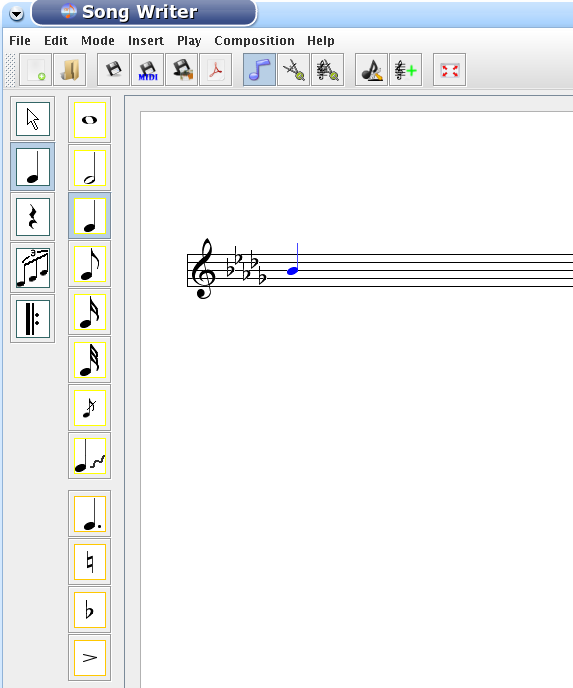
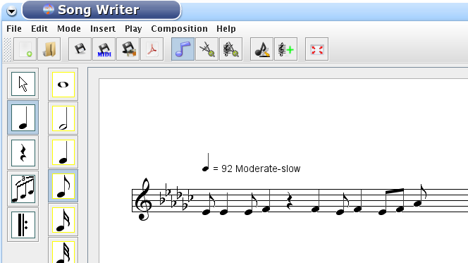
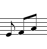
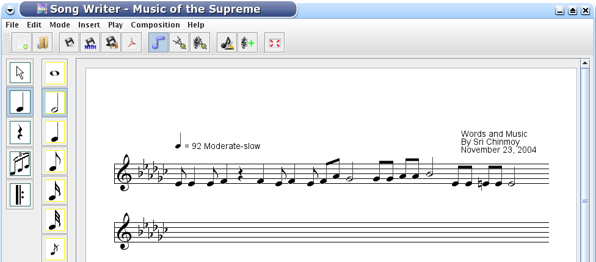

If you are in the note editing mode (in Mode menu), please select the Edit menu, Control submenu, Mouse. With the leftmost buttons you can select the category of items. When you click on a category, a different set of buttons appears in he next column. If you click on the note addition category (a quarter note of the leftmost buttons), there will be two sets of buttons. The first one is the note (from the whole note to grace note) and glissando, and the second one is for adding things to notes.

Only the most commonly used things appear in this panel. For example the natural and flat accidental can be found in this panel, but
the program has a knowledge of eight accidentals and accidentals in parentheses. The whole range can be found in the
Insert menu. When you want to enter a note with the mouse, first you click on the type of note. Then if the note has a dot or
an accidental (e.g. natural), then you click on the corresponding button. If you need to enter a different accidental (e.g. double flat), please click on the Insert menu, Accidentals, Double flat button. On the music sheet the blue note is always the editing note, the song does not contain that note. You can move that note
up and down to select the pitch, or left and right. If you move the note left and right and it is between two notes or at the and of the line, then by pressing the left mouse button you can insert the note. If you move the note over another note and click,
then the new note will replace the other one. Accidentals, dots, articulations must be set before entering
the note. The glissando behaves like another note, it can be entered after the note.
Now we start typing the song.

When we entered a quarter rest, we clicked on the rest category, selected the quarter rest and clicked on the music. The only difference between entering notes and rests is you cannot move the rest up and down. With the last three notes we encountered a difficulty. We want to beam only the last two eighth notes. Because of the automatic beaming process, the program beamed the first two notes from the last three. First we have to unbeam them and then beam the last two notes. Unbeam: select the notes to be unbeamed with the selection category on the left and drag the mouse over the notes. The selected notes will appear red. Now click on the triplet icon category on the left and click on the second (unbeam) button. If you keep the mouse over that button a little while, a description of the button will appear. Now select the last two notes, and click on the beam button. Now we have what we wanted:

Note that in keyboard mode this process, like others, will be much faster. Now we have finished the line.

You can create a new line with Insert menu, Line submenu and click at the end. There is also a button on the tool bar for this.